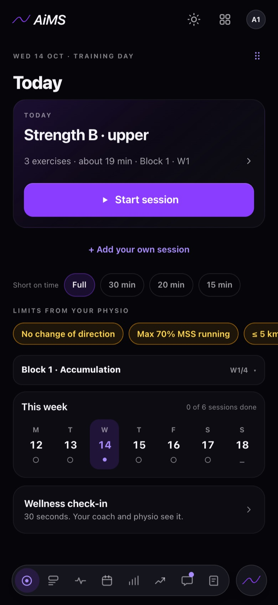

AiMS is built by a physio and strength coach in Ballarat.
Tim Welsh built AiMS to run his own floor at RAD Centre, where physios and strength coaches look after the same athletes every day.

Two plans for one athlete.
At RAD Centre the physio notes lived in one system and the programmes in another. Limits went by text message. The athlete was the only one who saw both plans, and often the last to know what changed.
Tim tried the big platforms first. None of them put the clinic and the gym on the same plan.
So he built one system for the clinic and the gym, around the athlete, and used it on his own floor first.
“I was the one texting the coach after every consult. AiMS is the system I wanted on our own floor.”
Tim Welsh · founder · Head of Performance and Education, RAD Centre
How we make decisions.
Ballarat, Victoria.
RAD Centre, Selkirk Stadium, 989 Norman St, Wendouree. Sports physiotherapy and strength and conditioning since 2014.
AiMS Health · ABN

See AiMS with your own athletes.
Book a 30-minute video call with Tim. He shows you AiMS using your programmes and your clinic’s way of working.
The founding cohort is a small group of clinics, gyms and clubs that start first, set up by Tim.